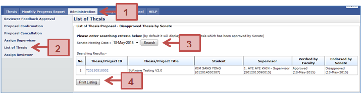
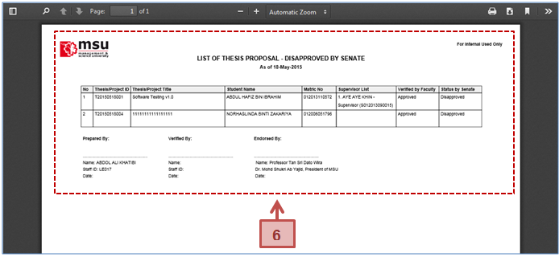

Figure 32: Administration Tab – List of Disapproved Thesis
Pre-condition
Senate has disapproved the thesis proposal submitted by the Student.
Steps
- Click on the Administration tab on the system Top Panel section.
- Click on the List of Thesis menu on the system Left Panel section.
- The List of Thesis page will be displayed on the Working Area section. Select the Senate Date if to find the specific result or leave it empty to find general result. Click Search button.
- The result will be displayed under the Searching Result table. Click on the Print Listing button to generate a list of disapproved thesis.
- The PDF file will be generated and it can be saved or printed out.
Next Action
Student needs to resubmit the thesis proposal.
Warning
None
Note
None.
Created with the Personal Edition of HelpNDoc: Write eBooks for the Kindle